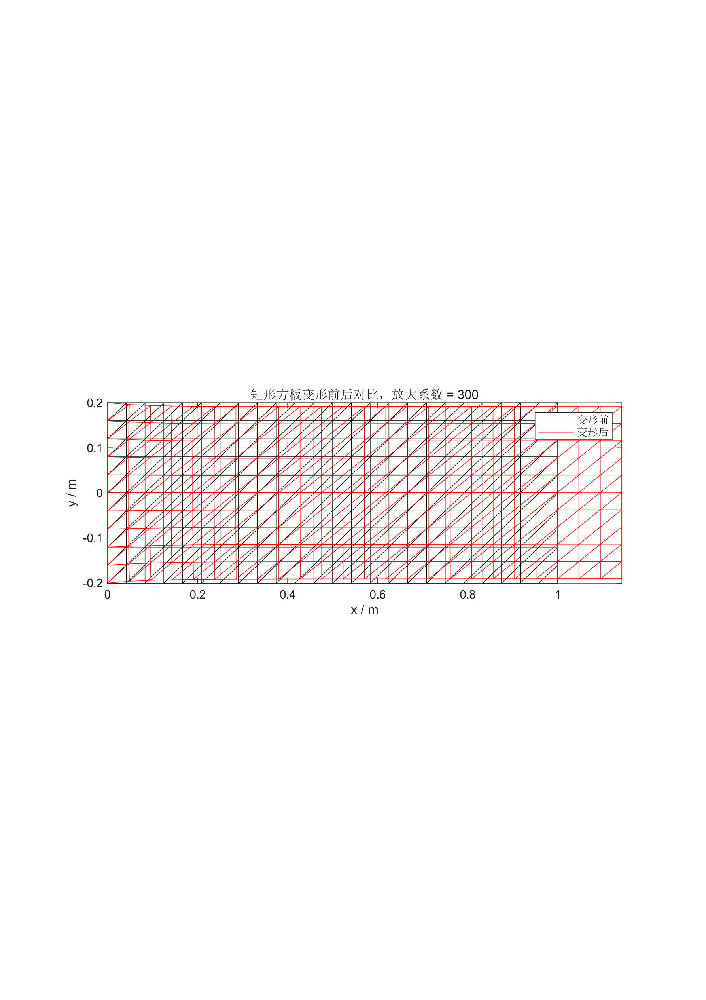
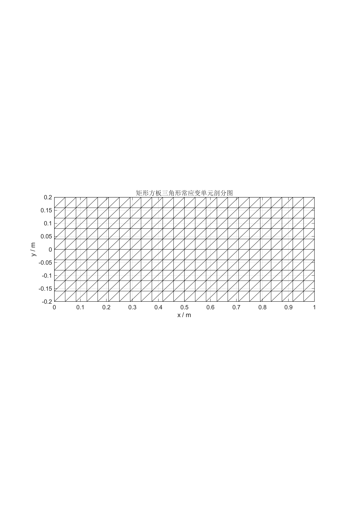

Problem formulation
Problem identification, mechanics assumptions and introductory finite-element reports.
COMPUTATIONAL MECHANICS · 2026 ARCHIVE
A complete finite-element and structural-simulation archive spanning one-dimensional bars, trusses, beam and frame studies, and a two-dimensional plane-stress plate benchmark.
从单元公式、总体组装到 Abaqus 求解与科研图表，把每一条计算链路完整留下。

01 / RESEARCH POSITION
This archive treats a finite-element result as a chain of evidence rather than a single contour plot: problem definition, weak-form reasoning, element implementation, global assembly, boundary conditions, solver execution, post-processing and comparison against theory.
The central plate study uses a linear-elastic plane-stress model. It reproduces the global uniaxial response while making the local boundary disturbance visible—exactly the kind of distinction that is easy to lose when only a polished figure is published.

02 / FEATURED CASE · TASK 9
Left boundary fixed, right boundary loaded by a uniform tensile traction, upper and lower edges free. The saved model uses CPS3 elements in a Static General plane-stress analysis and compares the computed field with the uniform-tension solution.
03 / STUDY MAP
Problem identification, mechanics assumptions and introductory finite-element reports.
Global stiffness assembly, constraints, displacement, strain, stress and reactions in MATLAB.
Two-dimensional truss formulation with MATLAB/Abaqus comparison and scripted model creation.
Beam, cantilever, frame and axial-bar model databases, input decks and solver traces.
Plane elasticity, CST discretization, theory comparison, stress fields and publication-style reporting.
04 / EVIDENCE, NOT DECORATION
05 / PUBLICATION BOUNDARY
The project is published as a computational research and teaching archive. The saved numerical results are not presented as experimental validation, production design approval or safety certification. Local Abaqus environment state, cache files and the third-party R installer remain outside the public release.
Read the release scope ↗